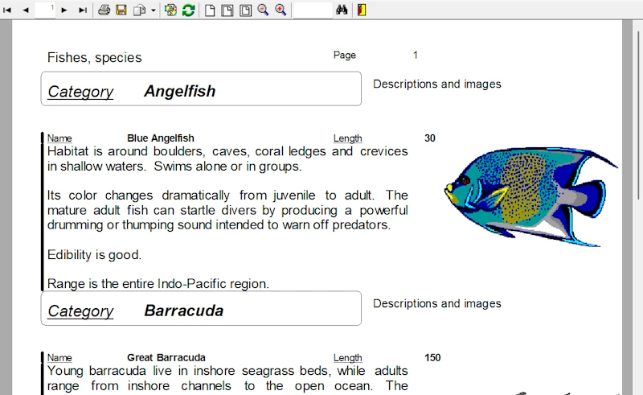

Report Manager
Motor de informes y disenador visual de codigo abierto para .NET, Delphi, C++Builder y Linux — salida a PDF, SVG, HTML e impresion.
Formato avanzado
Etiquetas HTML para nombre, tamano, estilo y color de fuente, con interpolacion de expresiones en el propio texto:
Cliente: <b>{{CLIENTE.NOMBRE}}</b>
Disenador visual de informes
Distribuya el disenador para modificar informes sin tocar su aplicacion.
AI Copilot Nuevo
Cree, edite y depure informes con IA: generacion por esquema, ayuda SQL y de expresiones.
Servidor de informes web y TCP
Genera PDF al vuelo con un servidor multiprocesador — sin pago de licencias.
.NET y .NET Core
Bibliotecas nativas y paquetes NuGet, componentes Delphi/C++Builder y ActiveX.
Reportman DB Agent
Ejecute e imprima sus informes desde cualquier lugar mediante una conexion de agente segura.
Descripcion de la aplicacion
Report Manager es una aplicacion de generacion de informes (Report Manager Designer) y un conjunto de bibliotecas y herramientas de linea de comandos para previsualizar, exportar o imprimir informes. Incluye componentes nativos para .NET y .NET Core y Delphi/C++Builder, un componente ActiveX, y una biblioteca dinamica estandar para su uso desde cualquier lenguaje como GNU C. Tambien hay disponible una version para Linux 64 bits que genera archivos PDF.


Hay disponibles paquetes NuGet de Report Manager; se ha creado un nuevo repositorio para desarrollo en .NET.
El motor incluye un servidor de informes TCP a traves del cual los clientes obtienen informes procesados en el servidor. Tambien se incluye un completo servidor web de informes que genera archivos Adobe PDF al vuelo — un potente servidor de informes de red sin pago de licencias y con soporte multiprocesador.
Licencia
Report Manager es codigo abierto bajo el modelo de licencia MPL (incluye permiso de uso en aplicaciones GPL), por lo que puede usarlo en sus aplicaciones comerciales, pero cualquier mejora del motor debe ser publicada.
Comprar
Report Manager es libre y gratuito; puede adquirir soporte u otros servicios.
Resumen de caracteristicas
Funciona en Windows y Linux. Puede distribuir el disenador de informes, con lo que consigue modificar informes sin modificar su aplicacion, y el resultado puede guardarse como archivo Adobe PDF.
Report Manager dispone de multiples caracteristicas (en ingles), incluyendo algunas exclusivas como bibliotecas de informes, metaarchivos, fuentes de impresora, secciones externas y subinformes hijos. Si utiliza Delphi, C++Builder o FPC/Lazarus, puede incluir el motor de informes — presentacion preliminar, dialogo de impresion y opciones del informe — en sus propios ejecutables.
Version actual
Consulte las novedades de la version actual (en ingles), un resumen de los entornos de desarrollo soportados, la lista de caracteristicas, la documentacion y las preguntas frecuentes (F.A.Q.)